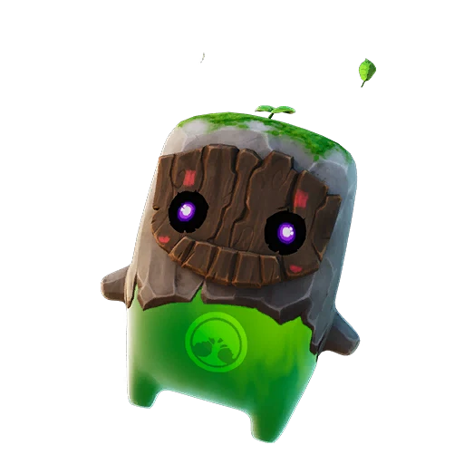
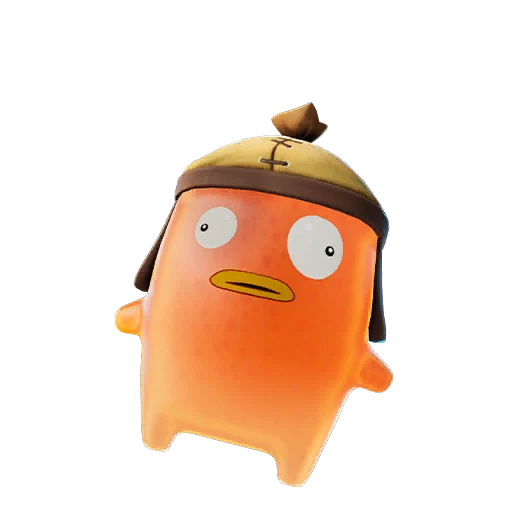

Rarity Tier
Rare Sprites in Fortnite: The Complete Collection Guide
There are 5 Rare Sprites in Fortnite. See each one's ability below, then mark the ones you own on the FORTNITE SPRITES TRACKER.
 Water Sprite Rare
Water Sprite Rare 
Earth Sprite Rare Fire Sprite Rare
Fire Sprite Rare 
Fishy Sprite Rare Air Sprite RareCollecting every Rare Sprite? Track your progress as you go.
Open the FORTNITE SPRITES TRACKER →What Rare Sprites Are in Fortnite
Rare Sprites sit at the entry tier of the Sprite system, marked by the blue rarity colour you already know from weapons and items. They are the most approachable Sprites to summon and the first ones most players collect, which makes them the natural starting point for anyone building out a full set. Each one costs 100 Sprite Dust to summon, so they are forgiving on resources while you learn how the mechanic works.
Despite being the common tier, Rare Sprites are far from filler. Every one carries a genuinely useful passive ability that triggers during a match, and they are the foundation that the rest of your collection is built on. There are four Rare Sprites in total, and because of their friendly summon cost they are perfect for experimenting with playstyles before you chase the pricier Epic, Legendary, and Mythic tiers.
The Full List of Rare Sprites
Here is every sprite in the Rare tier, along with what each ability does and where you are most likely to encounter it. Water replenishes your shields while you stand in water, and it spawns near rivers, lakes, beaches, and coastline areas. Earth gives you a chance for extra rare items from chests, and it appears in forests and wooded areas. Fire releases a fiery burst after you deal enough damage, and you will find it around city and built-up POIs.
Fishy increases your swim speed and gives a movement boost while taking fire, turning up in chests across the map, especially in high and mountainous areas. Rounding out the five Rare Sprites is Air, added in v41.20, which boosts your sprint speed and jump height and appears in Sprite Chests and regular chests. Together these five Rare Sprites cover shields, loot luck, burst damage, and two flavors of mobility, so the tier offers a surprisingly broad mix of effects for such an accessible rarity.
How to Get Rare Sprites
You collect Rare Sprites by finding them in their natural habitats and summoning them with Sprite Dust. Each of the five Rare Sprites has a preferred zone: head to coastlines for Water, forests for Earth, cities for Fire, the higher ground or general chest pool for Fishy, and Sprite Chests anywhere on the map for Air. Landing in the right biome dramatically improves your odds of running into the one you still need.
Once you spot one, summoning it costs 100 Sprite Dust, the lowest summon cost of any tier. That low price is exactly why Rare Sprites are the smart place to begin a collection run. Their Normal variants' exact drop rates are no longer published, but they remain the most common Sprites in the loot pool, so you will see Rare Sprites far more often than the scarcer tiers above them.
How Rare and Strong Rare Sprites Are
On the rarity ladder, Rare Sprites are the most common tier, which means they show up frequently and are the easiest to complete. The Normal versions' rates are no longer published, but encounters are common rather than lucky. That abundance is a feature: it lets you practise the summon loop and test abilities without burning through scarce resources.
Strength-wise, Rare Sprites punch above their tier. Water keeps your shields topped up in aquatic fights, Earth quietly improves your loot quality, Fire adds free burst damage in skirmishes, Fishy makes swimming escapes far smoother, and Air speeds up every sprint and jump. None of these effects are flashy ultimates, but they are consistent, low-maintenance perks that fit almost any loadout, which is why experienced players keep Rare Sprites in rotation long after they have unlocked rarer options.
Tips for Collecting All Rare Sprites
The fastest way to finish the Rare tier is to plan your drops around each habitat. Knock out Water on a coastline match, then queue into a wooded landing for Earth, a city POI for Fire, and a high-ground or chest-heavy route for Fishy and Air. Stockpiling Sprite Dust ahead of time means you can summon the moment you spot one rather than walking away empty-handed.
Because the four Rare Sprites have such high base drop rates, completing the Normal versions is realistic in just a few focused sessions, after which you can start hunting the Gold, Gummy, and Galaxy themed versions for bonus effects. To keep your progress straight, log each catch in the FORTNITE SPRITES TRACKER as you go. Track your Rare Sprites collection on the FORTNITE SPRITES TRACKER so you always know which of the four Rare Sprites and which themed variants you still need to find.
Frequently asked questions
How many Rare Sprites are there in Fortnite?
There are five Rare Sprites: Water, Earth, Fire, Fishy, and Air. They make up the common blue tier and are the most accessible Sprites to collect — the three elementals cost 100 Sprite Dust to summon, while Fishy and Air cost 1,800 after the July 24, 2026 price cut.
What do the Rare Sprites do?
Water replenishes shields while you stand in water, Earth gives a chance for extra rare items from chests, Fire releases a fiery burst after you deal enough damage, Fishy increases swim speed plus gives a movement boost while taking fire, and Air increases sprint speed and jump height.
Where can I find each Rare Sprite?
Water spawns near rivers, lakes, beaches, and coastlines; Earth appears in forests and wooded areas; Fire shows up around city and built-up POIs; Fishy is found in chests across the map, especially in high and mountainous areas; and Air comes from Sprite Chests and regular chests anywhere.